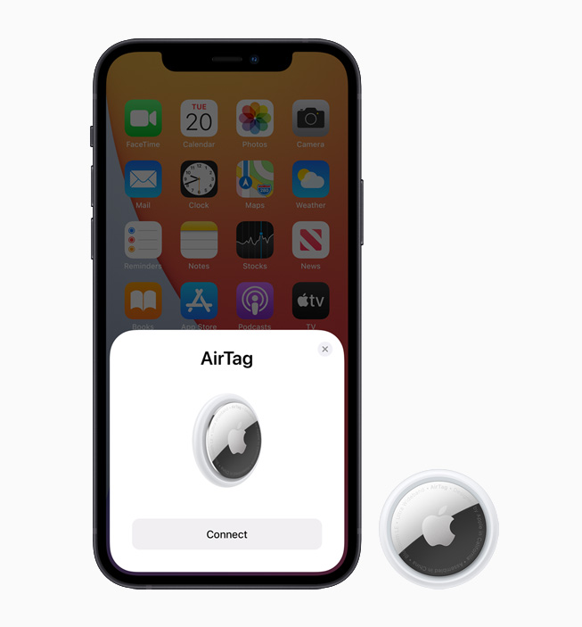

Airtag

Airtag
Perdez l'habitude
de tout perdre.
L’AirTag est l’accessoire tout trouvé pour tout retrouver. Accrochez‑en un à vos clés,
glissez‑en un autre dans votre sac, et n’y pensez plus. Grâce aux AirTags, vous pouvez
facilement repérer vos objets dans l’app Localiser, qui vous permet aussi de détecter vos appareils Apple et de ne pas perdre vos proches de vue.
À partir de 39 €
Un son. Et c’est trouvé
Paniquer quand on égare son portefeuille ? Avec l’AirTag,
c’est de l’histoire ancienne. Rendez‑vous dans le nouvel onglet
Objets de l’app Localiser et faites sonner l’AirTag
correspondant – ou dites « Dis Siri, où est mon portefeuille ? ».
Le haut‑parleur intégré de l’AirTag fait alors retentir un bip.
S’il se cache à proximité, sous un coussin ou dans la pièce voisine,
vous n’avez plus qu’à vous laisser guider par le son.
